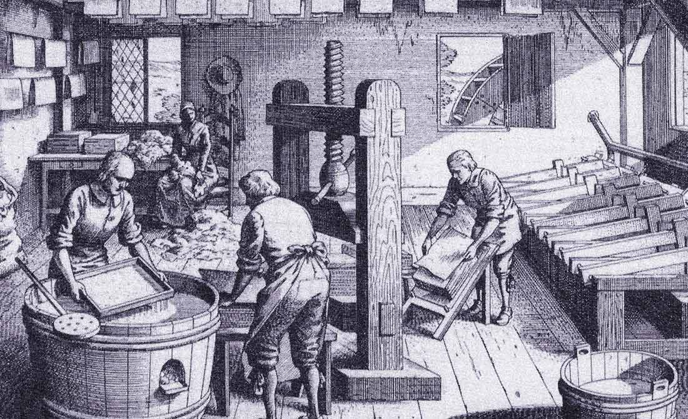

The Chinese took to recording information and drawings on pieces of cloth, crafting special sheets for these purposes. Until Paper was likely created by a Chinese court official in Lei-Yang called Ts'ai Lun likely by mixing Mulberry bark with hemp and rags of water before taking all the liquid out and letting a thin sheet hang in the sun.
300 years after paper was invented in China it spread to the middle east where then after 500 more years Europe had paper and was opening paper mills in Spain. With paper being easier to make paper was used in making important books and documents. In 1690 an American paper mill was made using the same original technics as the inventor of the paper dating back 1600 years at that point, so when the demand for paper grew the process of making paper became more and more refined and only after lost the aspect of cloth and used trees instead.
